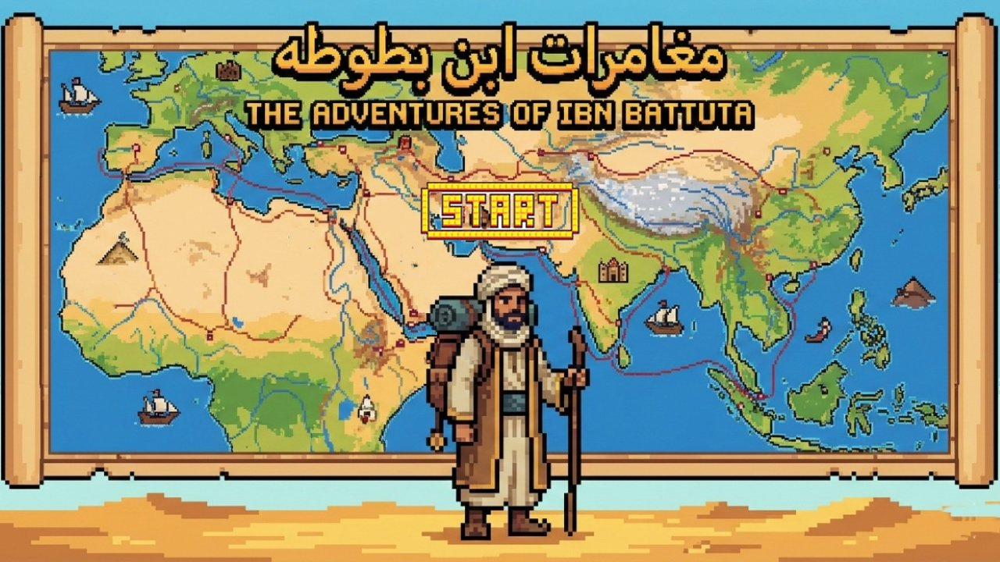
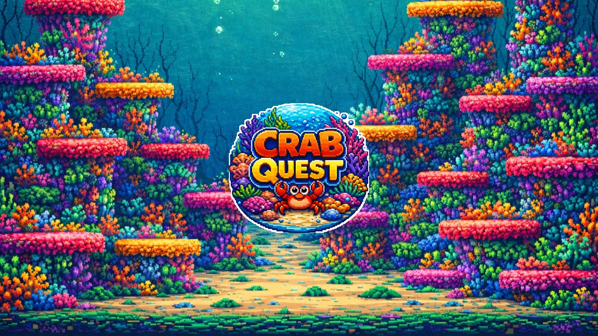

A proposal for the Afro-Asian Forum and its academies
Flara: better stories for every forum entry
An AI film studio for the Film Festival, Game to Gain and Entrepreneur competitions
Ibrahim Ahmed · 8 November 2026
Who's presenting
I coach teams that build story-first games for the forum

The Adventures of Ibn Battuta
One mini-game per city of the Rihla

Crab Quest
Six chapters about ocean pollution
Space X: Journey to Jupiter
A mission to Europa's hidden ocean
Each game starts from a story. Flara makes that story visible.
What is Flara
Flara is an AI studio that turns a story into a film
Students write the idea, design the characters and direct the scenes. Flara animates, scores and voices them, in Arabic and English.
From one-line idea to finished film, in one place.
What Flara does today
Everything a student film or trailer needs
Story and world
From a one-line idea to a full plot
Consistent characters
The same cast and style in every scene
Animated films
Scenes, cutscenes, trailers and ads
Music and sound
Original soundtracks and sound effects
Voices
Narration and character voices
Drawings to video
Students draw; Flara animates their art
Why it matters
Judges and parents score what they see
Today
- Teams spend most of their time on code or filming basics
- Entries look alike on screen
- Strong ideas get lost in weak stories
With Flara
- Time goes into the story and the idea
- Every entry has its own characters and look
- Parents and judges follow the story
How students use it
Five steps to a winning project
01 · Student
Idea
Write the story and its message
02 · Student + Flara
Characters and world
Design the cast, style and settings
03 · Student
Build
Code the game, film the shots, make the prototype
04 · Student + Flara
Film
Scenes, trailer or pitch, with music and voice
05 · Student
Present
Submit, with a clear note of what AI made
The forum · 2027
Two rounds, three competitions where stories score
February round 2027
- Film Festival · ages 9–16
- Game to Gain · ages 8–25
May round 2027
- Entrepreneur · ages 13–25
Each one already scores storytelling, visuals or sound.
Where Flara helps
Storytelling is already scored in all three
Film Festival
Storytelling 30 of 100 points, Creativity 30, and a Best Storytelling award
Game to Gain
Awards for Idea, Visual Art, Audio and Best Marketing
Entrepreneur
A pitch video that must use storytelling, with animation and soundtrack allowed
Later, a dedicated Storytelling category (Phase 4).
Film Festival
Students film the present; Flara animates the past
Students make
- The logline, script and narration
- Real shots with a phone: the experiment, the questions
- The edit
Flara makes
- Scenes from history students can't film
- Music and narration
- Arabic and English versions
Real footage keeps the camera points and the rule that films are student-made.
Game to Gain
Flara makes what surrounds the game, where awards are won
The game video
Required before the event: a story intro and trailer
Excellence in Idea
Story, world and characters, written first
Excellence in Audio
Soundtrack and sound effects that play inside the game
Best Marketing
Ads for the event screen and social media
Students still design and code the game themselves.
Game to Gain · example
Example: The Adventures of Ibn Battuta, opening film
Live demo, or the opening film: partners/media/game-to-gain.mp4
Entrepreneur
A pitch video that tells a story in 4 minutes
What the video must show
- The idea and the prototype
- The customer persona
- The marketing plan, with an ad
What Flara adds
- Story structure for investors
- An animated persona and product scenes
- The ad, soundtrack and voice-over
AI use
The student directs. Flara does the animation.
Students decide
They write the story and choose every character and scene.
Students draw
Flara animates their own drawings, so the work stays theirs.
Every step is logged
Judges can see what the student made and what AI made.
Proposed · for the forum
A simple AI-use policy for every competition
01
Allowed if disclosed
Any AI tool, as long as the team says how it was used
02
A disclosure form
One page per entry: what the team made, what AI made
03
Judges' guide
How to score entries that used AI fairly
The rules are silent on AI today. This puts the forum ahead.
Impact
For the forum: stronger entries and clear AI rules
Stronger entries
Better stories and visuals in film, game and pitch categories
A lead on fair AI use
Clear rules and disclosure, ahead of other forums
Impact
For academies: new courses and results parents see
A new course to sell
One per competition, built with your instructors (TBD)
Results parents see
Films families share, and finalists in the academy's name
Rollout
From instructors in November to the February round
Phase 1 · Nov 2026
Instructors
Meet, train and try Flara
Phase 2 · Dec–Jan
Student projects
20 students build ~10 projects in class
Phase 3 · Feb 2027
February round
Students submit and compete
Phase 4 · May 2027 on
Grow
May round, Entrepreneur, more academies
We measure students trained, projects submitted and coaches certified.
Phase 1 · November 2026
Instructors learn Flara before students start
Steps
- Intro meetings with each academy
- Show how Flara fits each competition
- Instructors try Flara
- Each makes one sample project
Targets
- 2 academies
- 4 instructors certified
- Course requirements collected
- 4 sample projects
Goal: instructors ready to teach before students start.
Phase 2 · December 2026–January 2027
20 students build ~10 projects for February
Steps
- Instructors run Flara sessions in class
- Students build their projects
- Fill in the AI-use disclosure
- Submit to the competitions
Targets
- 20 students trained
- ~10 projects submitted
- Students choose Film Festival or Game to Gain
Goal: real Flara entries at a real forum round.
Next step
Start this month with two academies
Two pilot academies for the February round, and a requirements session with each academy to shape the courses.
Ibrahim Ahmed · flara.io
Backup · accounts option A
Instructor accounts: the instructor runs Flara
For
- Works for students under 13
- No student logins or personal data in Flara
- Few seats, low cost
- Instructors learn the tool deeply
Against
- The instructor can slow the class down
- The AI log is per instructor, tagged by team
- Less hands-on for students
Backup · accounts option B
Student accounts: each team has its own login
For
- Most hands-on for students
- A clean AI log per team
- Scales without the instructor
Against
- Needs guardian consent and the data-protection licence first
- Only for students 13 and over
- More seats, cost and support